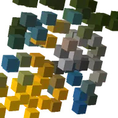

3D-verstrooiing

Maakt van de laag een raster van verstrooide 3D-stukjes.
Instellingen
| Instelling | Type | Bereik | Standaard |
|---|---|---|---|
| Vorm | Keuze | Kubus, Bol, Vierkant, Cirkel | Kubus |
| Rasterafstand | Getal | 1 px tot 500 px | 24 px |
| Stukgrootte | Getal | 0% tot 200% | 80% |
| Rasterdiepte | Getal | 1 tot 16 | 1 |
| Diepteafstand | Getal | 0 px tot 500 px | 24 px |
| Verstrooiing | Getal | 0 px tot 2000 px | 0 px |
| Seed | Getal | 0 tot 10000 | 0 |
| Verstrooiingsrotatie | Getal | 0 tot 3600 | 0 |
| Rotatie X | Hoek | -3600° tot 3600° | 0° |
| Rotatie Y | Hoek | -3600° tot 3600° | 0° |
| Rotatie Z | Hoek | -3600° tot 3600° | 0° |
| Draaias | Keuze | X, Y, Z | Y |
| Draaihoek | Hoek | -3600° tot 3600° | 0° |
| Perspectief | Getal | 0 tot 1 | 0.5 |
| Lichtrichting | Hoek | -3600° tot 3600° | 135° |
| Lichthoogte | Getal | 0 tot 4 | 1 |
| Lichtintensiteit | Getal | 0 tot 2 | 1 |
| Schaduwwerking | Getal | 0 tot 1 | 0.6 |